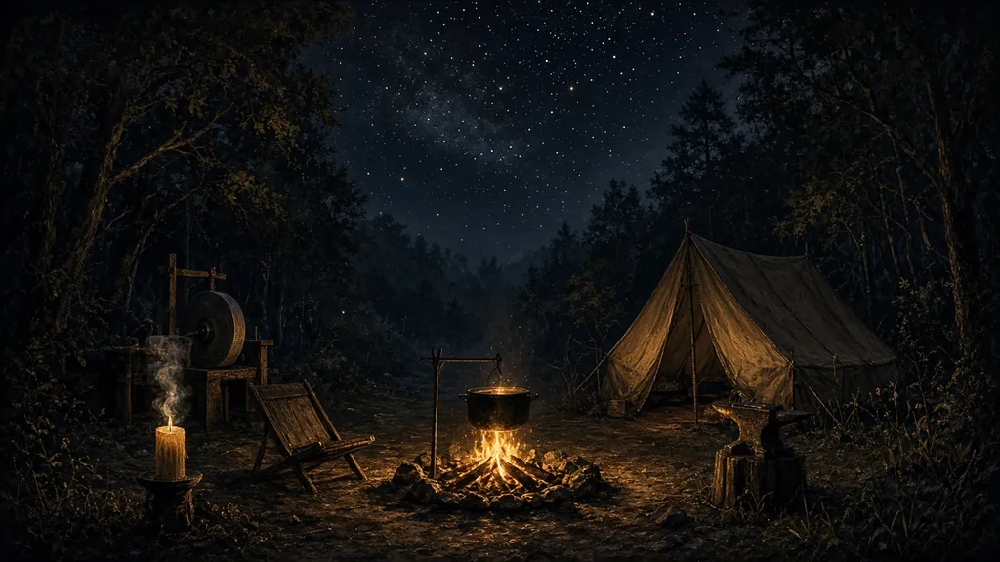

Rubrique
Métiers et artisanat
Métiers, campement et plans d’artisanat.
Articles

Vignettes : illustrations d’ambiance — ne constituent pas une source.
Fiches courtes

Vignettes : illustrations d’ambiance — ne constituent pas une source.